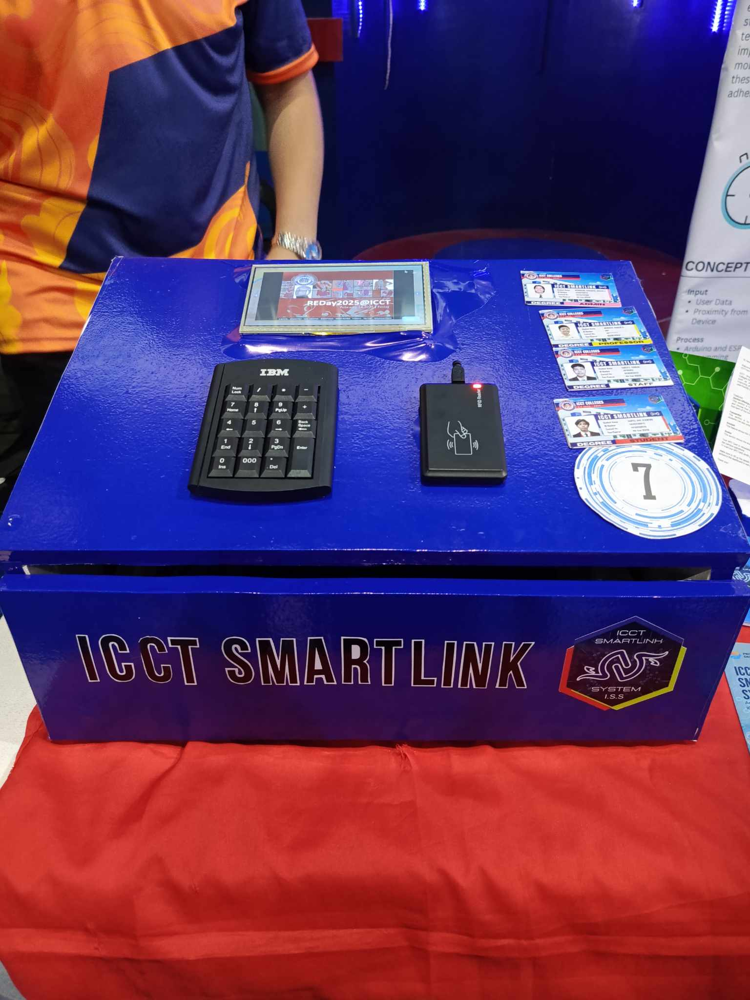

Education
BS Computer Engineering
Class of 2025. Focused on hardware systems and network infrastructure management. Consistent academic performer and technology enthusiast.
Experience
DICT Internship
Completed intensive hands-on experience in network engineering. Involved in real-world infrastructure setup and maintenance.

Innovation
ICCT SmartLink NFC ID
Developed an innovative NFC-integrated ID system for ICCT Colleges. This project bridges physical identification with digital convenience using SmartLink technology for a smarter campus experience.
